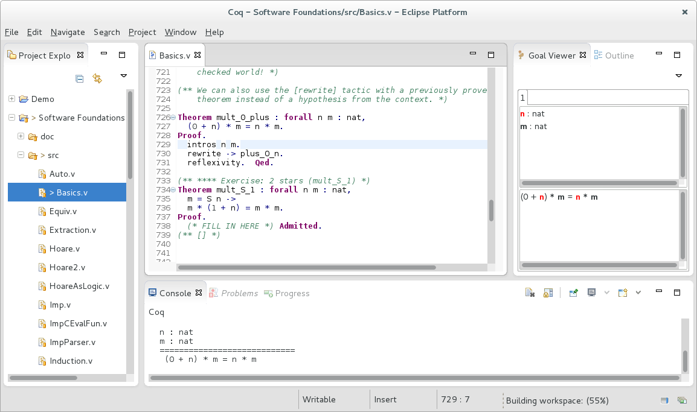
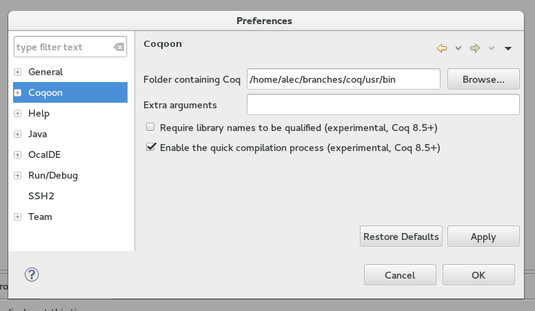

Coqoon is an Eclipse plugin providing a feature-complete development environment for Coq projects. 
Coqoon works well with other Eclipse plugins — add more to add new features like version control or support for embedded OCaml plugins.
Automatically rebuild dependencies when proof scripts change, and forget about manual load path configuration.
Structure Coq developments like Java
projects, manage project
interdependencies with a user
interface, and avoid cluttering source
folders with .vo files.
All Coqoon projects come with a configure
script, so they can be built and developed even without
using Coqoon.
Coqoon takes advantage of all the latest changes to Coq: edit proofs asynchronously and get automatic feedback, or use the quick compilation chain to compile a colossal project in just a few minutes.
In order to use Coqoon's PIDE support, you'll need a recent version of Coq 8.5. A prebuilt binary will soon be available for Windows users; for other platforms, the most recent source code can be found and downloaded from the GitHub development page for the v8.5 branch.
Note that Coqoon is not compatible with the most recent release in the 8.5 series, Coq 8.5beta2, as it depends on features added since that release.
Once you've installed Coq 8.5, download and install the latest version
of the PIDEtop plugin. A prebuilt binary will soon be available is
available for Windows users; for other platforms, it should be built from the
latest version of the source code. (When building PIDEtop, note that the trailing
slash in the COQBIN variable is required.)
See the PIDEtop installation instructions for more details.
Coqoon should work with any recent version of the Java virtual machine. See Oracle's Java downloads page.
Coqoon requires version 4.2 (Juno) or later of Eclipse, available from the Eclipse downloads page.
As the examples are hosted in a Git repository, we recommend a package that includes Git support out of the box, such as the Eclipse IDE for Java Developers.
Coqoon is tested regularly on Windows, Mac OS X and Linux.
The repository used by these instructions currently contains an old version of Coqoon; it is due to be updated on 21 October 2015.
Coqoon - https://www.itu.dk/research/tomeso/coqoon/e42into the Work with: text box, and press Enter.
New versions of Coqoon are released frequently to add new features, fix bugs, and improve performance. To update Coqoon to the most recent version, select the Help → Check for Updates menu option.
A new version of Coqoon will be released on 21 October 2015.
Coqoon will search some system folders for Coq, but if it can't find it—or if it finds the wrong version—you may need to manually specify the the folder that contains the coqtop program.
To specify the path, select the Window → Preferences (or Eclipse → Preferences on Mac OS X) menu option, choose the Coqoon category, and then click Browse to choose the correct folder. 
If you're using Coqoon with OCaml integration, note that OcaIDE ignores this setting, and will only look for Coq in your configured path, or in the folder specified by the COQBIN environment variable. (We expect to fix this issue soon.)
The default Eclipse user interface configuration does not show any Coq-specific views. To enable these, select the Window → Open Perspective → Other... menu option, choose Coq, and click OK.
We also provide a version of Benjamin Pierce's Software Foundations course, modified to be compatible with the Coq 8.5 series. The easiest way to import it is to use Eclipse's integrated Git support:
This process will create a local copy of the Software Foundations repository on your computer; to import the project again, you should use this local copy directly by choosing the Existing local repository option instead of Clone URI.
To fetch updates from the Software Foundations repository and incorporate them into your local copy, open the Git Repositories view (Window → Show View → Other... → Git → Git Repositories), right-click the Software-Foundations entry, and click Pull.
Coqoon's source code is hosted on GitHub, and can be checked out anonymously using the command
git clone git://github.com/hannesm/Kopitiam.git
Report bugs, issues and problems using the Coqoon issue tracker.
Coqoon is managed by Jesper Bengtson and developed by Alexander Faithfull (who also maintains this webpage), based on work by Hannes Mehnert.